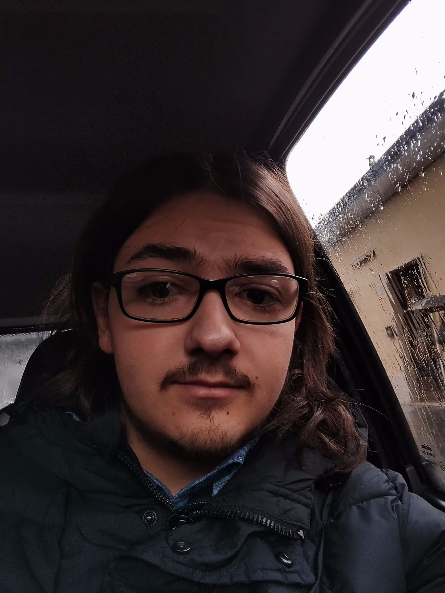

About me
I'm Mattia Formichetti, I'm 18 and I love studying many things.
There's not much else to say, it's Philosophy, Music and Computer Science that I love the most.
I study Classical Guitar and now I'm starting to write some music of my own.
I use Linux and love the Free Software and Open Source movements.
Lastly I would say that we should strive to realistically improve ourselves, especially on a sistemic level, and that can and has to be achieved with an open mind, especially reconsidering economical systems such as Socialism.
